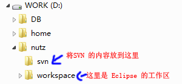
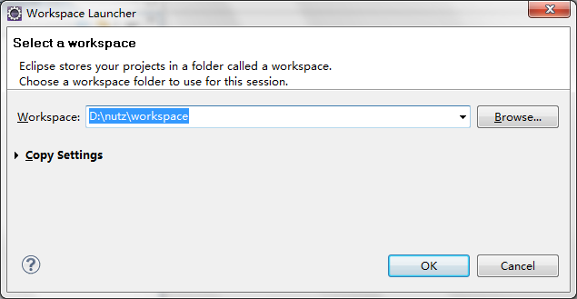
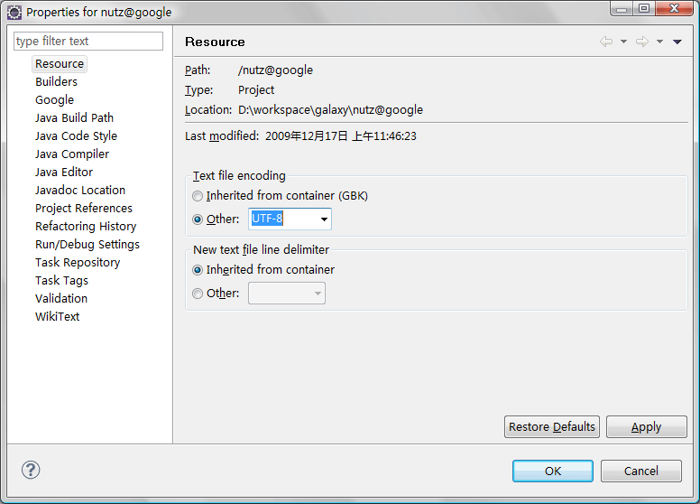
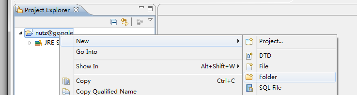
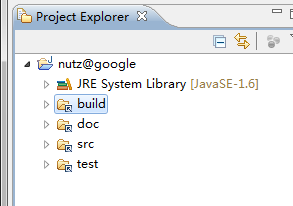
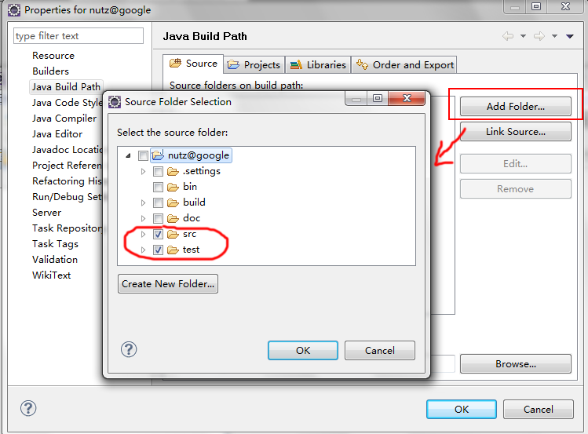
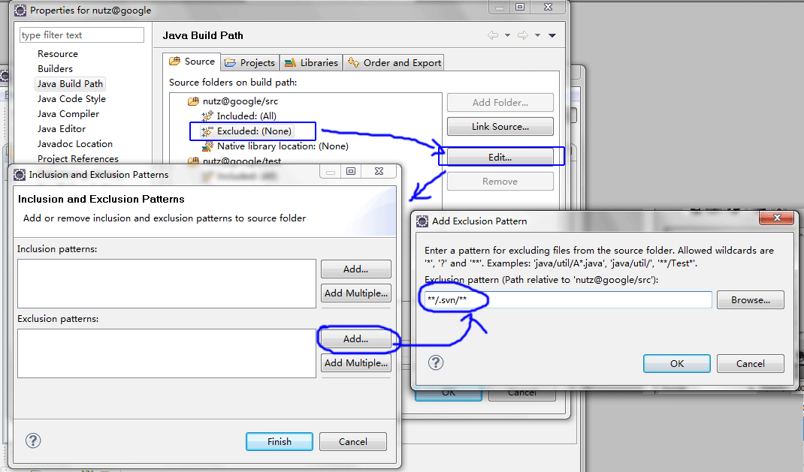
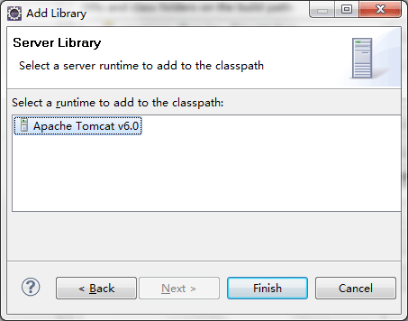
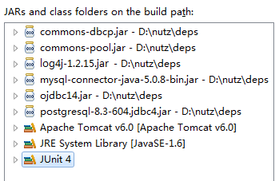

准备目录

使用 SVN 工具
- Windows 用户： 这里用的是 龟版 SVN
- Linux 用户： 你肯定用不到我废话了

连接 http://nutz.googlecode.com/svn
Check out
连接
SVN 的 http 连接比较慢，需要等待几十秒至1分钟。连接上后，选择 trunk 目录，并 checkout

选择本地目录
选择 Checkout 的目标地址，点确定

这个例子，我们的目标地址就是 D:\nutz\svn\trunk
检出
点击 OK 后，会开始下载 Nutz 全部的文件

Nutz 全部的文件并不大，如果是正常的 ADSL， 大概半分钟左后就能全部下完：

下载之后，你的目录结构应该是：
查看结果

准备依赖的 jar 包

Nutz 不是不依赖其他 jar 吗? 是的，但是在编译时它依赖 Log4j。
在运行时如果 Log4j 的 jar 不存在，它会采用System.out/err 详情请参看 Nutz 的日志模块
Nutz.Dao 的测试时在
- Mysql
- Postgresql
- Oracle
- H2
- SqlServer2000
- SqlServer2005
这几个数据库上作的，所以需要它们的 JDBC 实现。你可以根据需要选择一个你喜欢的数据库。我最喜欢 PSQL，但是当然，大多数人都爱用 Mysql。
要是运行测试用例，你还得需要 Apache 的连接池，以及某一个数据库的 JDBC 实现。Apache 提供的连接池是两个 jar，有了它，我们就可以很简单的创建 DataSource，你可以选择你喜欢的连接池实现。c3p0，proxool ，爱用什么都可以，但是得把 jar 包准备好。
注意: 如果你顺利的检出（Check out）了 SVN 文件，你会发现在 /trunk/build/deps 目录下，有你需要的所有 jar 包注意: 如果你需要配置成其他数据源,请修改test\org\nutz\dao\test\meta\pojo.js , 参考如何创建DataSource
我们，先把 jar 文件在 D:/nutz/deps 里面放好，后面会用得到
准备Eclipse工作区
打开 Eclipse, 工作区路径为 D:/nutz/workspace

打开之后的工作区是空空如也

当然，你要在你已经存在的工作区里进行下面的操作也可以。
建立 Tomcat 运行环境
增加 Tomcat 服务器 (你必选先装了 Tomcat)
这里主要是为了编译，而需要 tomcat 带的 Servlet 相关的类选择Window > Preferences > Server > Runtime Environment > Add 在弹出的对话框选择Apache > Apache Tomcat v6.0 （因为我装的就是 Tomcat6.0）点击 next ，填写 Tomcat 的安装路径

然后点击 finish ， OK 之类的，确认所有的对话框
建立 Java 项目
选择 File > New，在弹出的对话框中选择 建立普通的 Java 项目（Java Project），并点 Next

- 输入项目名称为： nutz@google (其实，随便你起个什么名字, 不要有'.'就行)
- 直接点击 Finish。
- 如果Eclipse 弹出对话框问你要不要转到 Java透视图，随你便，都行

请确保你的项目，文本的编码是 UTF-8 格式的。因为我大部分源代码的注释用的是中文，而且 doc 目录下的文本文件用的都是 UTF-8编码
链接源文件
新建立的项目包括一个默认的 src 文件夹，以及默认的 JRE System Library，选中 src，按 delete 键删除，我们不需要它

项目目录清净了，那么让我们把 Nutz SVN 目录下的文件链接进来：

右击项目名称，选择 New > Folder
在弹出的对话框中，选择链接外部文件

点击 Finish 按钮后，项目下多出了一个链接文件夹

以此类推，将 test 目录也加进来，如果你愿意，你可以把所有的目录都加进来

配置 Build Path
下面配置项目的 build path

在弹出的 Configure Build Path 对话框中，将 src 和 test 加为 source folder

注意，请别忘了设置过滤的 pattern:

否则，会出编译警告，因为 svn 缓存在目录中的文件也会被 Eclipse 看到。分别为 src 和 test 增加过滤 pattern，就可以让 Eclipse 忽略所有的 .svn 工作目录
过滤的表达式是： **/.svn/**
检查一下
最后，检查一下，设置完毕后，是不是这个样子，注意下图红圈部分：

设置 jar 包的依赖关系
最后，让我们设置依赖关系包，增加依赖的 Jar 包

确认之后，再点击 Add Library ... ，在弹出的对话框里选 Server Runtime，之后，选前面加入的 Apache Tomcat 6.0

为了运行单元测试，你还需要加入 JUnit 4 的依赖包: Add Library... > JUnit > JUnit 4 > OK
设置完毕后，所有的依赖关系应该是这个样子

完成
至此，你的项目全部都建立起来了，并且在 Eclipse 应该都会被自动编译通过